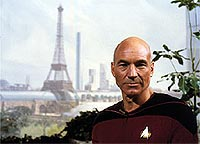
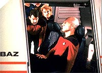
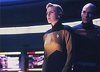
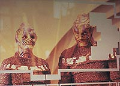
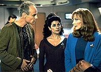

|
Viagens
no tempo e no espao, Parte I
 Viagem
no tempo sempre foi um tema que estimulou a imaginao de
qualquer ser humano, e por conseqncia foi um tema amplamente
debatido e aproveitado na fico cientfica. Em Jornada nas
Estrelas no poderia ter sido diferente. J em "The
Naked Time", da Srie Clssica, tivemos um
gostinho do tema, que s viria a ser desenvolvido completamente
pela primeira vez no franchise no episdio "Tomorrow is
Yesterday", ainda na primeira temporada. Viagem
no tempo sempre foi um tema que estimulou a imaginao de
qualquer ser humano, e por conseqncia foi um tema amplamente
debatido e aproveitado na fico cientfica. Em Jornada nas
Estrelas no poderia ter sido diferente. J em "The
Naked Time", da Srie Clssica, tivemos um
gostinho do tema, que s viria a ser desenvolvido completamente
pela primeira vez no franchise no episdio "Tomorrow is
Yesterday", ainda na primeira temporada.
Claro, esses eram tempos onde no havia ningum na equipe de
produo como o sr. Brannon "Anomalia Temporal" Braga,
e a Srie Clssica acabou possuindo apenas seis episdios
que mostravam, de uma forma ou de outra, viagens no tempo. A
Nova Gerao seguiu o caminho j traado previamente por
Kirk e cia, e teve sua prpria cota de incurses temporais.
No total, foram produzidos 11 episdios que lidam com incurses
temporais. Claro que, em episdios como esses, os roteiristas tm
um desafio adicional: evitar os famosos "paradoxos
temporais" --alteraes realizadas na histria por um
viajante temporal que afetam diretamente os personagens ou a galxia
como um todo. Algumas vezes, os roteiristas criam e resolvem
paradoxos com maestria. Outras...
 J
na primeira temporada da Nova Gerao foi exibido o fraco
episdio "We'll Always Have Paris", onde a
tripulao descobre que experimentos realizados em Vandor IV
criaram uma distoro temporal. O efeito notado uma srie de
pequenos paradoxos, onde os personagens encontram a si mesmos em
momentos que variam de alguns segundos no futuro a minutos no
passado ou futuro. As cenas so mostradas com um pouco de confuso
--ora so momentos que se repetem, como um soluo, ora a
tripulao encontrando a si mesmo. Porm, so pequenos
paradoxos previstos pelos roteiristas para mostrar as alteraes
no espao-tempo que o experimento causara. No h conseqncias
visveis, ou paradoxos maiores, mas a trama podia ter sido um
pouco melhor explicada. Claro que aqui ainda no vimos uma viagem
no tempo em si, mas sim pequenas distores.
A primeira viagem no tempo, efetivamente falando, seria mostrada
no episdio "Time Squared", da segunda
temporada. No episdio, Picard o nico sobrevivente da
destruio da Enterprise, que havia sido sugada por um
gigantesco redemoinho, e sua fuga em uma nave auxiliar acaba o
levando seis horas para o passado, onde a Enterprise ainda est
intacta. O Picard do futuro sofre um violento choque, e no
consegue se lembrar do que ocorrera. Alm disso, o computador da
nave auxiliar no pode ser lido. Quando Picard do futuro
atacado por raios de energia, deduz-se que ele a chave para a
soluo do paradoxo. Picard do presente ordena que a nave rume
direto para o centro do redemoinho, seu alter-ego do futuro
desaparece e tudo volta "ao normal".
 Mas
o que seria o normal aqui? Se a Enteprise havia sido destruda,
devemos concluir que a histria foi alterada, criando-se uma nova
onde a nave permaneceu intacta. Porm, se considerarmos que a
destruio da Enterprise ocorreu em uma linha temporal paralela,
a trama acaba fazendo muito mais sentido, exceto pelo fato que, se
Picard do futuro continuasse na nave at o momento em que, na
linha alternativa, ela teria sido destruda, ele desapareceria do
mesmo jeito, assim como o redemoinho. A deciso do Picard do
presente de rumar a nave para o turbilho, afinal, apenas
acelerou os fatos, mas acaba sendo mais dramtico em termos de
concluso do episdio.
 Paradoxo
semelhante encontrado na prxima incurso temporal, "Yesterday's
Enterprise", da terceira temporada --um favorito entre os
fs, onde a Enterprise-C, fugindo de naves Romulanas que a
atacavam em Khitomer, acaba viajando ao futuro, alterando a histria
da Federao. A presena da nave no futuro cria uma linha
temporal onde a Federao est em guerra com os Klingons, e
Tasha ainda est viva. Ao longo da trama, a capit da Enterprise-C
morta, e sua tripulao decide voltar ao passado, mesmo
significando o sacrifcio de suas vidas. Tasha, ao descobrir,
atravs de conversas com Guinan, que deveria estar morta, decide
partir com eles. A Enterprise-C volta ao passado, e a linha
temporal "quase" restabelecida --e os tripulantes da
Enterprise-D nem se lembram do ocorrido.
O "quase" restabelecida do pargrafo anterior diz
respeito a Tasha. Sua presena no passado poderia no ter
causado nenhum dano visvel. Porm, em episdios futuros,
conheceramos Sela, filha de Tasha! Ou seja, houve uma pequena
alterao no futuro. Isso, claro, se considerarmos que foi na
verdade a Enterprise vista enquanto a Enteprise-C estava no futuro
for, afinal, de uma linha paralela de tempo. Se estvamos lidando
o tempo todo com a mesma linha temporal, ao voltar para o passado
com a Enterprise-C, Tasha teria simplesmente desaparecido --e a
capit Garrett voltado vida, ao menos por um breve perodo.
Vemos, assim, que a "explicao cientfica" adotada
at aqui pela srie lida com infinitas linhas temporais
coexistindo simultaneamente.
 Ainda
na terceira temporada, um novo tema lidando com viagens temporais
seria desenvolvido --desta vez em "Captain's Holiday".
No episdio, Picard vai em licena para Risa, mas acaba se vendo
no meio da busca por um poderoso dispositivo do futuro, o "Tox
Uthat". Dois Vorgons do sculo 27 querem lev-lo de volta a
seu prprio tempo, e sabem que Picard aquele que pode ajud-los.
Um Ferengi chamado Sovak tambm procura pelo dispositivo, assim
como a bela Vash --vista aqui pela primeira vez. Picard acaba
descobrindo que Vash j havia encontrado o tal dispositivo, e os
dois Vorgons reaparecem. Picard, porm, ao invs de
entregar-lhes o dispositivo, pede Enteprise que o destrua. Os
Vorgons desaparecem deixando a impresso de que era justamente a
destruio do artefato que deveria acontecer. No h maiores
conseqncia visveis, uma vez que no sabemos como o futuro
se desenrolar at o sculo 27.
 J
no fraco "A Matter of Time", da quinta temporada,
a Enterprise recebe a visita de um suposto historiador do sculo
26, Berlinghoff Rasmussen, que ao final se revela como um inventor
do sculo 22 que conseguiu colocar as mos em uma nave do sculo
26. No h nenhum paradoxo presente, alm dos furos claros no
roteiro, escrito por titio Berman. O maior deles que Rasmussen
poderia ter escolhido muitos outros meios mais fceis para roubar
tecnologia que no da nave capitnia da Frota. A deciso de
mant-lo no sculo 22 parece ter sido mais sbia, uma vez que
envi-lo de volta ao seu tempo com os conhecimentos adquiridos
poderia efetivamente mudar a histria. Claro que a simples presena
dele tambm poderia alter-la, mas a linha temporal
aparentemente permaneceu intacta.
interessante notar que, j na quinta temporada, no vemos
nenhum episdio em que a tripulao faa uma incurso
temporal (t bom, t bom, tivemos um "engasgo
temporal" em "Cause and Effect", do Brannon
Braga, que lida com a repetio interminvel dos mesmos
eventos, mas no chega a ser uma "viagem no tempo"
propriamente dita). Isso s seria mostrado no episdio "Time's
Arrow", no final da quinta temporada. Mas isso assunto
para a prxima coluna.
Fernando
Rodrigues editor do boletim Base News e escreve
mensalmente sobre a Nova Gerao para o Trek Brasilis
|